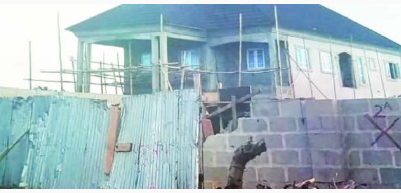

Court orders demolition of 53 houses built on NITEL/MTEL land in Lagos
posted by bsonatunde june 19
The Lagos State High Court in Ikorodu has ordered the demolition of 53 structures built on an expanse of land acquired by the Federal Government for the Nigerian Telecommunication Limited in the Ikorodu area of the state.
According to reports a while back, some former workers of NITEL and its erstwhile mobile subsidiary, the Nigerian Mobile Telecommunications, and other beneficiaries, whom the land was allocated to, were being allegedly threatened by a Lagos family.
The allottees were said to have formed a group, the NITEL/MTEL Landlords Association, which instituted an action in court against the family, but suspected land grabbers allegedly encroached on the land and sold some part to unsuspecting people at ridiculous prices.
It was learnt that those who purchased land from the land grabbers built structures on it against the order of Justice I. B. Lawal-Akapo, who had prohibited construction works on the land pending the determination of the substantive suit. The judge was said to have delegated a team made up of the Assistant Court Registrar, officials of the state ministries of Environment and Physical Planning and Urban Development as well as the claimants and defendants lawyers, accompanied by men of the Lagos State Police Command, to inspect the land to ascertain the number of structures built on it against the courts instruction.
At the end of the inspection, 53 of such structures were identified and marked for demolition. Our correspondent learnt that the Assistant Court Registrar was mandated to write a report on the inspection from which the judge would make a decision on the fate of the structures.
readmore

New Music: MKess @mkess17 - Adura
posted by bsonatunde june 19
Kessiena Ochuko a.k.a MKess is a 20 Year-old Nigerian singer and songwriter from Delta state.
She started music professionally 5 years ago though she's been a singer from a tender age and by October last year She was signed to Gbesi Entertainment.
This is her first official single titled "Adura under the company. The song was produced by Magic Boy, And mixed and mastered by Ace Music Engineer Brain On The Mix. readmore
Dbanj receives Silver plaque from YouTube after hitting 100,000 subscribers (Photos)
posted by bsonatunde june 19
Last night, Nigerian superstar and entrepreneur Dapo Oyebanjo popularly known as (D-banj) was hosted by Youtube music at the Landmark Event Centre Lagos where the iconic artist received a special 'Silver Creator Award' for hitting 100,000 subcribers.
Dbanj was a panellist at the (YouTube Week) where he shared the tips and tricks behind his impact in various sectors of the Nigerian economy through his multiple award-winning music career.
Over the course of his 14-year career, he boasts of his (CREAM) platform which has generated over 15 million dollars and garnered over 3.5 million subscribers since its inception in 2016 and through which he produced one of Nigeria’s biggest hit tracks (Legbegbe) by Mr. Real readmore